Quantum Multi-Agent Development & Scheduling Platform
🇬🇧 English version: README.en.md（图内文字为中文，图注附英文关键词）
一个把真实量子算法（QAOA / 绝热量子退火 / Born 测量坍缩）作为调度决策引擎的多Agent平台：任务分配被编码为哈密顿量，在约束子空间上精确演化——联合调度规模达等效 80 量子比特（全空间模拟需 10¹⁵ TB 内存，宇宙尺度不可行），且在 NP-hard 耦合赛道上 5/5 精确命中最优（最强经典对手 3/5；npm run bench 一键复现，v1.11 统一记账勘误见基准节）。
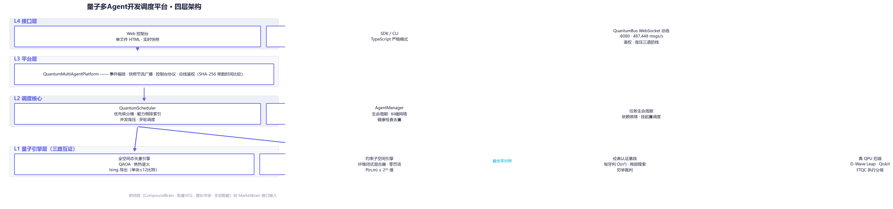
本 README 的全部原理图由仓内脚本 docs/diagrams/generate.py 从真实工件（out/bench/bench-report.json 机器可读基准报告 + 公开实测数字）渲染，python docs/diagrams/generate.py 一键重建。
| 章节 | 看点 | |
|---|---|---|
| ✨ | 核心能力 | 八项能力一览 |
| 🏗️ | 架构总览 | 四层架构 |
| ⚛️ | 量子调度核心 | 管线 · 哈密顿量 · 子空间 · 纤维 · QAOA · 退火 · Born |
| 🔌 | 真 QPU 与执行分级 | D-Wave · Qiskit · FTQC 三态路由 |
| 🧠 | 市场机制研究线 | 增广 WDP · DSIC · 学习曲线 |
| 📊 | 基准与性能 | 量子 5/5 · 匈牙利互证 · 23.5× 并行 |
| 🚀 | 快速开始 | 十条命令 + 代码示例 |
| 🧪 | 测试与质量 | 687 用例 · 六门禁 · 覆盖率棘轮 |
| 📁 | 目录结构 | 含图集生成器 |
| 🗓️ | 版本演进 | v1.0 → v1.12 |
| ⚠️ | 诚实的边界 | 等效≠真机 · 组合爆炸 · 热路径 |
| 能力 | |
|---|---|
| ⚛️ | 真实量子物理引擎：复振幅态矢量、幺正演化（范数恒为 1.000000000000）、QAOA 变分电路、绝热退火、Born 规则测量坍缩 |
| 🌌 | 约束子空间突破：在合法分配集合（维度 P(n,m)）上精确演化，零罚项、纤维混合器闭式解，等效 80 量子比特 |
| 🔗 | 纠缠 = 物理耦合：agent 纠缠对进入哈密顿量耦合项，实测可翻转联合最优解 |
| 🏆 | 认证经典基线：线性赛道与匈牙利算法 O(n³) 逐点一致（独立算法互证）；NP-hard 耦合赛道 5/5 全胜 |
| 🔌 | 真 QPU 后端层：D-Wave Leap REST 客户端（真量子退火硬件）+ IBM Qiskit 程序导出 + 本地精确引擎自动回退 |
| 🧭 | 执行层级路由（v1.11）：FTQC 资源估算器（qLDPC gross [[144,12,12]]/surface 码目录，显式假设）在提交前判定任务发 NISQ、转 FTQC 等待队列（FtqcDeferredError 携带资源画像）或回退经典精确引擎 |
| 🧠 | 市场机制研究线：CompoundBrain 增长复利大脑（DSIC 定理 + 在线学习曲线校准）、批量 VCG、相变定律 |
| 🔌 | 完整平台能力：WebSocket 总线（487,448 msgs/s）、DSH 工具/工作流集成、Web 控制台、主动智能规则插件 |
平台分四层：接口层（Web 控制台 / SDK / WebSocket 总线）→ 平台层（事件编排与快照广播）→ 调度核心（优先级分桶、能力索引、并发背压）→ 量子引擎层（全空间态矢量与约束子空间两套精确引擎，经典基线作对照，真 QPU 后端可切换）。市场机制研究线与主动智能插件通过 MarketBrain 接口接入，是独立的机制研究核心。
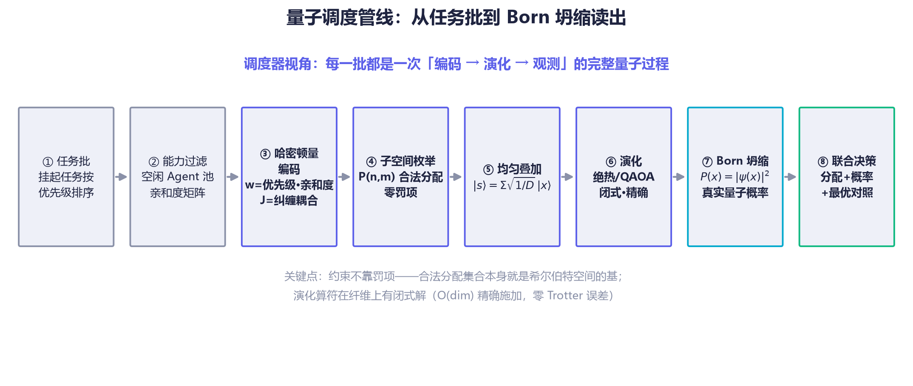
如上管线图所示，每一批任务都经历一次完整的「编码 → 演化 → 观测」量子过程——这是本平台与“用量子词汇装饰的经典调度器”的本质区别（对照表见量子调度核心节）。
| 概念 | v1.0（隐喻） | v1.3+（物理实现） |
|---|---|---|
| 叠加态 | 随机 amplitude 装饰字段 | 全部合法分配共存于 P(n,m) 维希尔伯特空间，复振幅 |
| 演化 | 无（直接加权评分） | 薛定谔方程数值积分：QAOA 变分 / 绝热退火 |
| 坍缩 | probability = 分数归一化 | Born 规则：P(x) = ‖ψ(x)‖²，决策概率是真实量子概率 |
| 纠缠 | 字符串数组（调度无视） | 哈密顿量耦合项 J·x₁x₂，改变基态（最优解） |
调度器把「m 个任务分给 n 个 agent」编码为一个对角代价哈密顿量：亲和度矩阵 w 进入对角（单点价值），agent 间的纠缠对进入耦合项 J（协作增益/冲突惩罚）——耦合项会移动基态，即改变最优联合分配，这是被测试钉住的对照面。
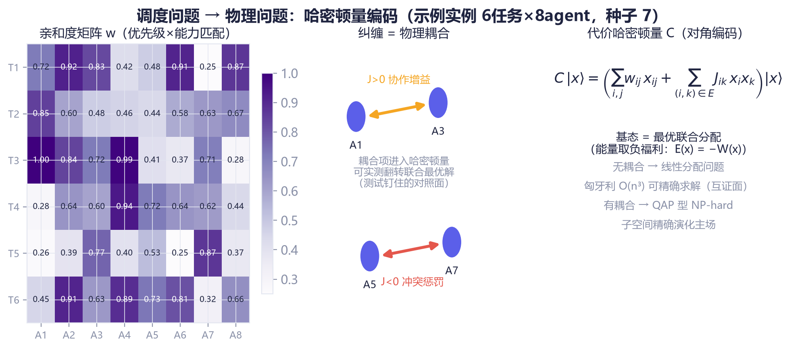
无耦合时问题退化为线性分配问题（匈牙利 O(n³) 可精确求解，成为互证面）；有耦合时为 QAP 型 NP-hard——这正是子空间精确演化的主场。
直接模拟 8任务×10agent 需要 2⁸⁰ ≈ 1.2×10²⁴ 维态矢量（约 10¹⁵ TB 内存）；但合法分配只有 P(n,m) = n!/(n−m)! = 1,814,400 个——「每任务恰占一个不同 agent」的约束直接长在基上，罚项为零：
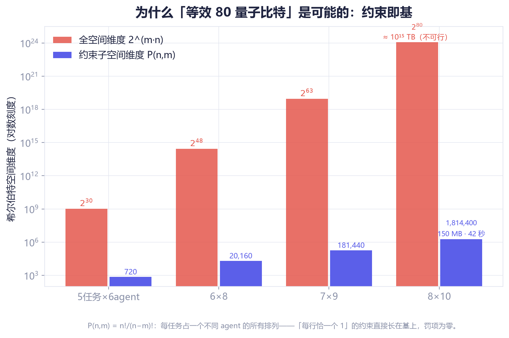
| 全空间态矢量 | 约束子空间 | |
|---|---|---|
| 希尔伯特维度 | 2^(m·n) | P(n,m) = n!/(n−m)! |
| 8任务×10agent | 2⁸⁰ ≈ 1.2×10²⁴ 维（≈10¹⁵ TB，不可行） | 1,814,400 维（≈150 MB，42 秒精确解） |
| 约束处理 | 二次罚项（能量尺度压缩风险） | 内建于子空间（零罚项） |
| 混合算符 | X 旋转（逐比特） | 纤维完全图旋转（闭式精确） |
子空间引擎的核心构造：把「移动单个任务的指派」看作图上的邻接算符——固定其余任务后，单任务的自由落点构成完全图 K_k = J − I，其矩阵指数有闭式解，于是混合层可以逐纤维精确施加、O(dim) 完成、零 Trotter 误差：
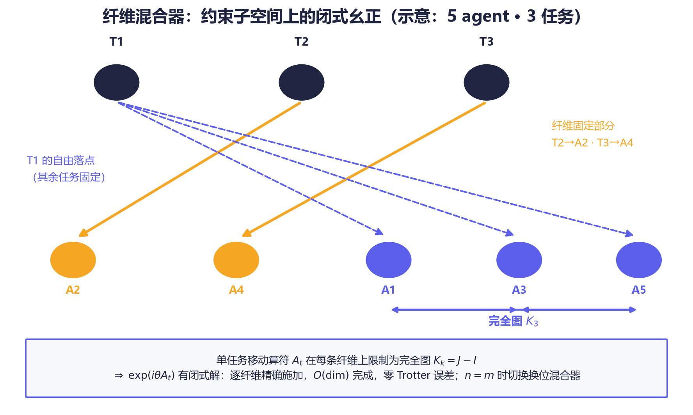
绝热初态取均匀叠加：由 Perron–Frobenius 定理，非负邻接阵的顶本征矢恰为 −ΣA 的基态——初态即初哈密顿量基态，无制备缺口。n = m 时自动切换换位（transposition）混合器。
全空间引擎实现交替层 QAOA（代价层 e^{−iγC} × 混合层，p 层，坐标下降离线优化角度）；v1.10 引入 ma-QAOA（逐算子变分角）：
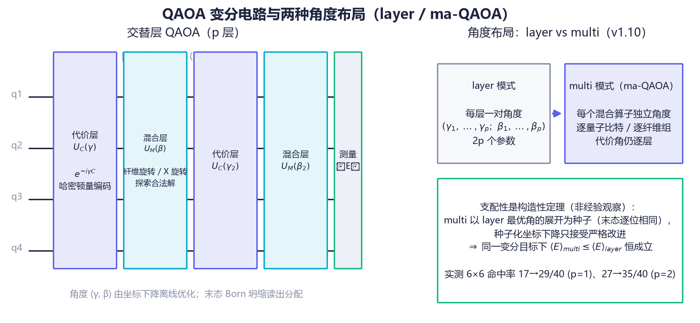
支配性是构造性定理，不是经验观察：multi 模式以 layer 最优角的展开态为种子（末态逐位相同），种子化坐标下降只接受严格改进 ⇒ 同一变分目标下 ⟨E⟩_multi ≤ ⟨E⟩_layer 恒成立。子空间变分 regime 实测增益显著（下图），全空间坍缩读数已饱和——如实不宣称收益，定理保证的支配依旧成立：
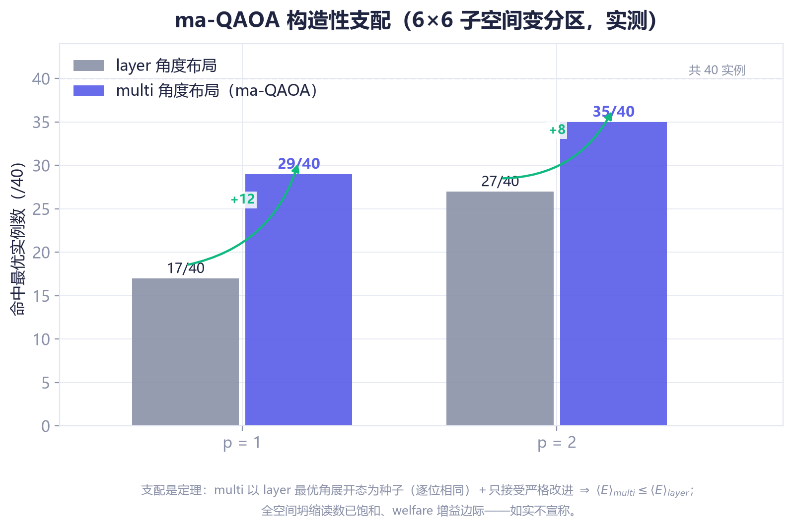
另支持 CVaR 分位数目标（cvarAlpha，v1.9）：只优化“最好的那 α 概率质量”，按能量升序预排序的精确态矢量 CVaR（无 shot 采样噪声）；在坍缩已近饱和的读数上 CVaR 有害——不宣称（tests/cvar-qaoa.test.ts 钉住）。
子空间默认算法是绝热演化：H(s) = (1−s)·(−ΣA) + s·C 在离散 s 网格上数值积分（默认 τ=20、steps=150），代价相位走复乘递推、纤维旋转闭式施加——每一步都是精确幺正：
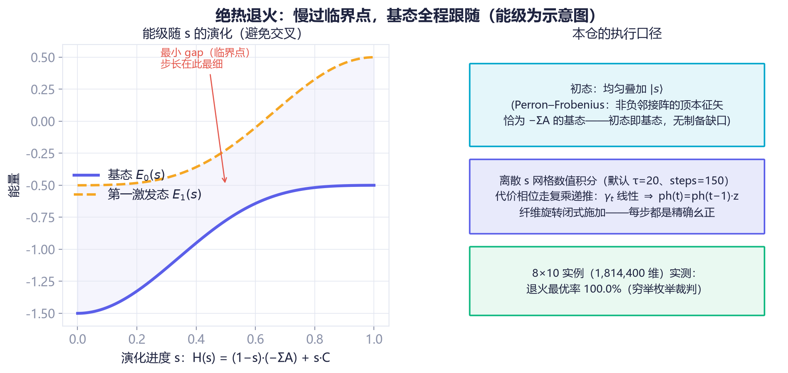
演化的终点是一次真实的量子观测：末态振幅按 Born 规则坍缩为决策概率，调度器的 decision.probability 是真实量子概率而非分数归一化；top-K 候选用线性选择（O(dim)）取代全量排序：
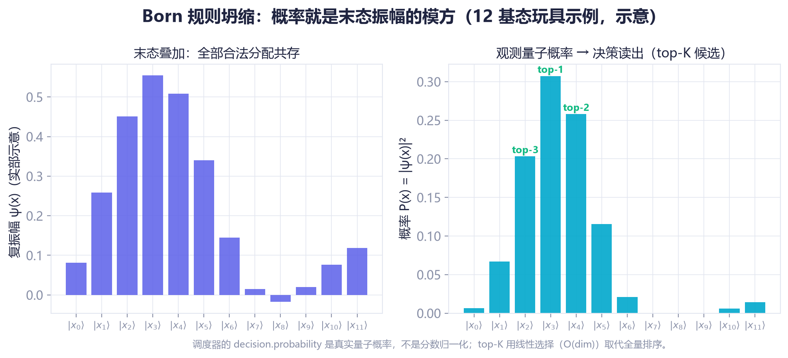
量子核心是薛定谔方程的经典精确模拟；toIsing() 导出的 (h, J) 可直接提交真实量子退火机，届时同一问题无需改代码即可换执行位置。真机采样经三道闸门（合法性校验 · 噪声过滤 · 最优率对照）后才进调度器：
set DWAVE_API_TOKEN=<token> → npm run example:qpu；无凭据时自动回退本地精确引擎（功能不中断）。toQiskitProgram() 产出可运行的 Qiskit 程序（内嵌本仓训练好的 QAOA 角度）。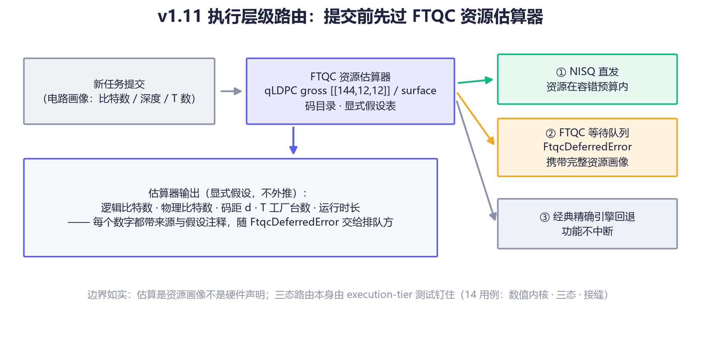
与量子核心并行的研究主线：把任务分配建模为智力资本市场——每个分配同时是消费决策（当期净价值）与投资决策（学习资本的增长影子价值 g）。结算流在线校准学习曲线 q̂(k)，增广 WDP 求解，Clarke pivot 支付保证 DSIC：
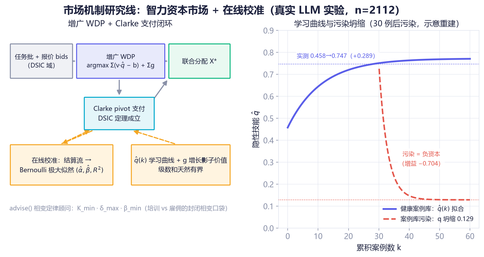
关键实测结论（真实 glm-4-flash，n=2112）：
| 发现 | 数据 |
|---|---|
| 隐性技能随案例积累上升 | q: 0.458 → 0.747（+0.289，α≈0.58，β≈0.09，z=2.77） |
| 污染案例库是负资本 | q 坍缩至 0.129（增益 −0.704） |
| 培训 vs 雇佣存在封闭相变口袋 | L1–L4 闭式定律 + Buckingham π 普适标度 |
🧪 v1.11 起可复现：
npm run bench一条命令重跑全部对照（50 实例 × 7 求解器，npm run bench:regenerate从公开种子重建实例族），机器可读报告输出到out/bench/bench-report.{json,md}。下节图表即由该报告渲染；裁判永远是穷举枚举，双方计同一本账。
等效 30 → 80 量子比特，四档退火最优率全部 100.0%（穷举裁判）：
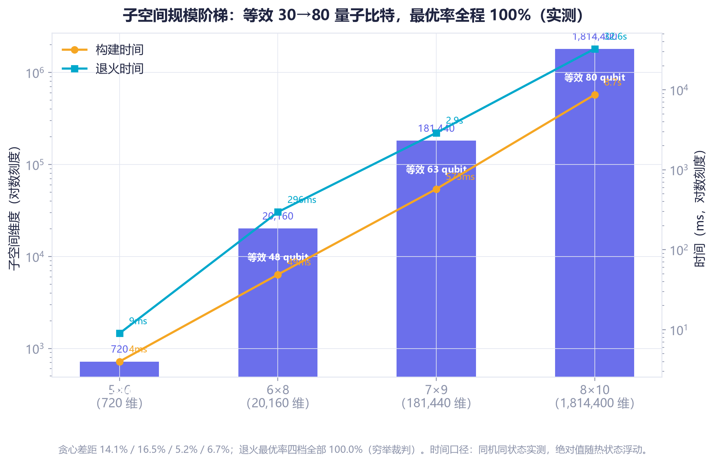
| 实例 | 等效量子比特 | 全空间维度 | 子空间维度 | 构建 | 退火 | 贪心差距 | 退火最优率 |
|---|---|---|---|---|---|---|---|
| 5×6 | 30 | 2³⁰ | 720 | 4 ms | 9 ms | 14.1% | 100.0% |
| 6×8 | 48 | 2⁴⁸ | 20,160 | 49 ms | 296 ms | 16.5% | 100.0% |
| 7×9 | 63 | 2⁶³ | 181,440 | 575 ms | 2.9 s | 5.2% | 100.0% |
| 8×10 | 80 | 2⁸⁰ ≈ 1.2×10²⁴ | 1,814,400 | 8.7 s | 32.6 s | 6.7% | 100.0% |
25 个无耦合实例（含 6×8）上，量子子空间引擎与匈牙利 O(n³) 双双 25/25 逐点命中最优——两种完全独立的算法落在同一条对角线上：
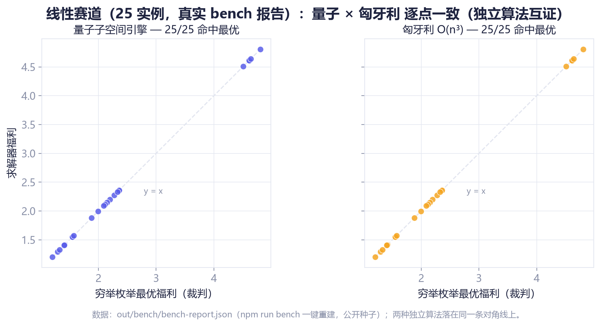
纠缠耦合使问题成为 QAP 型 NP-hard（6×8 × 5 公开种子，统一记账）：
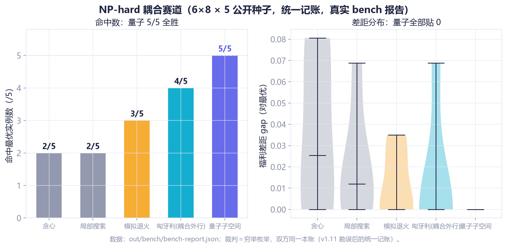
| 方法 | 命中最优 |
|---|---|
| 贪心 Greedy | 2/5 |
| 局部搜索 Local search | 2/5 |
| 模拟退火 Simulated annealing | 3/5 |
| 量子子空间 Quantum subspace | 5/5 ✅ |
⚠️ 勘误（v1.11，由 QuantumSched-Bench 定罪）：本表早期版本载“贪心 0/5、局部搜索 0/5”——那是示例脚本给经典侧只记不含耦合加成的半账、却对照含耦合的最优所致的记账 Artifact；统一记账下经典侧实为 2/5。量子侧 5/5 与线性侧逐点一致原样复现，胜负结论不变（5/5 vs 最强经典 3/5），差距数字如实修正。
量子管线全部三阶段（构建→演化→坍缩）重写并跨核并行：纤维尺寸查表消除逐纤维三角函数（8×10 实例曾需 29 亿次 Math.cos/sin）、退火代价相位复乘递推、构建期字典序单调键 + 二分查找、坍缩 top-K 线性选择（~500×）。大维度经 worker_threads + SharedArrayBuffer + Atomics 屏障多线程执行——并行 = 确定性，与串行路径共享同一份内核源码，结果逐位一致（测试逐位断言钉死）：
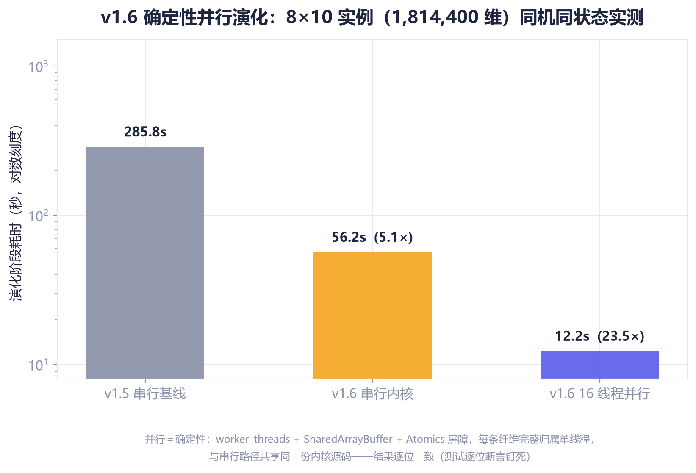
同机同状态实测（8×10，1,814,400 维，i9-12900H，20 逻辑核）：
| 管线阶段 | v1.5 | v1.6 | 提升 |
|---|---|---|---|
| 演化（串行内核） | 285.8 s* | 56.2 s | 5.1× |
| 演化（16 线程） | — | 12.2 s | 23.5× |
| 构建（DFS+能量+纤维组） | 14.5 s | 2.9 s | 5.0×（纤维组八组并行，逐位一致） |
| 坍缩 top-K 候选 | ~6.7 s | ~0.01 s | ~500× |
* 同场对比基准（同一进程内逐字复刻优化前内核）；绝对时间随热状态浮动，相对倍数是稳定口径。并行失败自动回退串行；开关：QUANTUM_WORKERS=<n> / QUANTUM_DISABLE_PARALLEL=1。
npm run performance 一键复现（实测环境 Node.js v24 / Windows / 2026-08；绝对吞吐随机器与热状态浮动，相对优化倍数是稳定口径）：
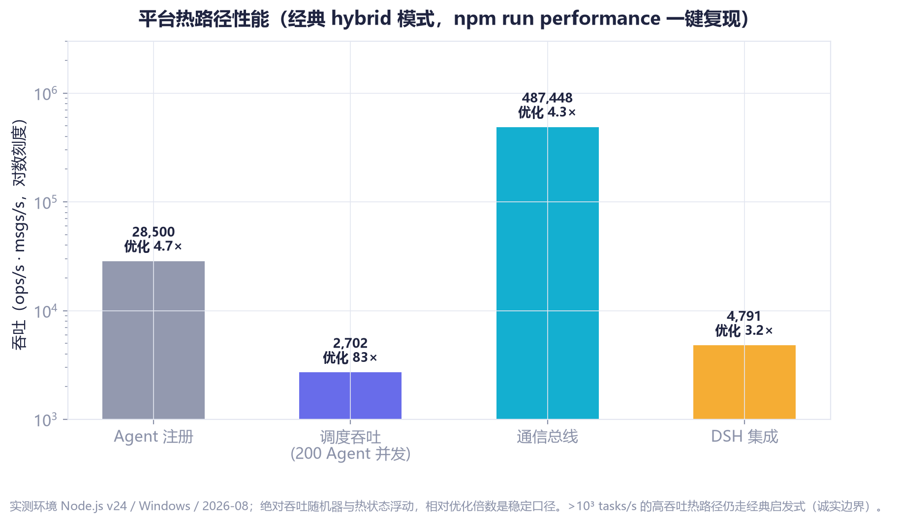
| 指标 | 吞吐 | 优化倍数 |
|---|---|---|
| Agent 注册 | 28,500 ops/s | 4.7× |
| 调度吞吐（200 Agent 并发） | 2,702 ops/s | 83× |
| 通信总线 | 487,448 msgs/s | 4.3× |
| DSH 集成 | 4,791 ops/s | 3.2× |
git clone https://github.com/beijingwahw/quantum-multi-agent-platform.git
cd quantum-multi-agent-platform
npm install
npm test # 687 用例 · 0 失败
npm run typecheck # 全仓类型检查（strict + noUncheckedIndexedAccess）
npm run lint # ESLint（typescript-eslint 推荐规则集）
npm run example:basic # 基础用法全链路（平台启停/调度/控制台协议）
npm run example:advanced # 高级工作流（纠缠/依赖/批量调度）
npm run example:quantum # 量子突破基准（7 部分）
npm run example:qpu # 真 QPU 入口（自动检测 DWAVE_API_TOKEN）
npm run bench # QuantumSched-Bench 全量对照（50 实例 × 7 求解器）
npm run dev # 启动平台（WS :8080）
端口口径（06#6）：架构图与
npm run dev的 :8080 是平台默认端口；示例刻意错开（basic=8081、advanced=8083），为的是示例可与运行中的 dev 平台并存不打架。两套端口都是配置项，不是硬编码约定。
import { QuantumScheduler } from './src/index.js';
const scheduler = new QuantumScheduler({
scheduling: {
quantumAlgorithm: 'quantum-annealing', // 或 'quantum-qaoa' | 'hybrid'（默认经典）
autoSchedule: false, // 攒任务做联合调度 | batch mode
quantum: { subspaceCap: 1 << 20, anneal: { tau: 20, steps: 150 } }
}
});
scheduler.registerAgent({ id: 'a1', name: 'Dev-1', type: 'developer',
capabilities: ['typescript'], state: 'idle', load: 0,
position: { x: 0, y: 0, z: 0 }, quantumEntanglement: ['a2'], lastHeartbeat: new Date() });
// ... 注册更多 agent，提交多个任务 ...
const report = scheduler.scheduleBatchQuantum();
console.log(report.representation); // 'subspace'
console.log(report.subspace); // { dimension: P(n,m), equivalentQubits }
console.log(report.optimality); // { achieved, optimal, ratio } 精确对照
console.log(report.assignments.map(a => `${a.taskName} → ${a.agentId} (p=${a.probability})`));
单任务模式（autoSchedule: true）下每次决策走“叠加 → 演化 → Born 坍缩”；默认 hybrid 路径与经典行为完全一致（零回归）。
687 用例 · 0 失败 · 65 个测试文件 / 207 个套件（性能灵敏度用例按测量环境守卫自跳过，跳过数随机器负载浮动）；六道门禁全绿，覆盖率棘轮只升不降：
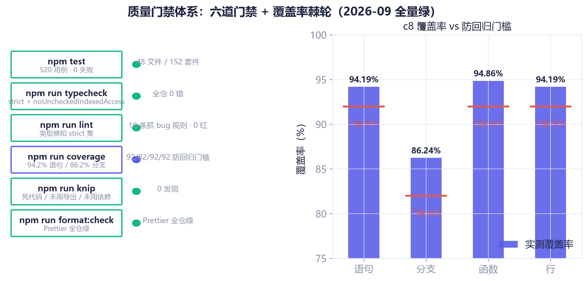
| 套件 | 用例 | 覆盖 |
|---|---|---|
quantum-optimizer.test.ts | 20 | 解析振幅 · 幺正性 · Born 分布 · Ising 导出逐点一致 |
subspace-optimizer.test.ts | 10 | 维度 = P(n,m) · 纤维可逆性(机器精度) · 双引擎交叉验证 |
subspace-parallel.test.ts | 11 | 并行=串行逐位一致 · 跨运行确定性 · 大维度最优 · 禁用回退 |
classical-baselines.test.ts | 5 | 量子×匈牙利逐点一致 · 多轮调度 · 超维回退 |
qpu-backend.test.ts | 12 | D-Wave 客户端真实 HTTP 往返(stub) · 双格式解析 · 轮询 · 调度器异步入口 |
| qiskit-selfcheck · qpu-crossval-smoke | 8 | Qiskit 导出自检 · QPU 跨验证冒烟 |
| CVaR / ma-QAOA（v1.9/v1.10） | 22 | CVaR 数学性质 · ma-QAOA 支配定理 · 位级等价 |
| execution-tier（v1.11 FTQC） | 14 | 资源估算数值内核 · 三态路由 · 接缝行为 |
| twin-convergence（v1.12 单源化） | 13 | 孪生收敛对拍 · 引擎级位同构回放 · 独立算法互证 |
security-hardening.test.ts | 24 | 命令注入 · 沙箱逃逸 · 原型污染 · 引擎回归 · junction 穿越 |
| 调度/管理/通信/平台/控制台 | 48 | 平台全链路回归 · 控制台协议端到端（R10 拆分后委托不变式钉板） |
| DSH / 主动智能 | 36 | DSH 集成 · 插件全量 + 冒烟 · 容量边界（05#16） |
| 市场机制（CompoundBrain/VCG/增长市场/相变） | 87 | DSIC · 校准 · 定律验证 · 模拟器分离（08#11）· 守恒不变量（05#7） |
| 回归/质量波（regression·wave1-3·quality·golden·audit·coverage·utils·docs·scripts） | 331 | 回归钉板 · 黄金契约 · 属性测试 · 标注审计 · 工具域负对照 · R10 情报/总线/QPU 回归（intelligence-bus-r10 18 · qpu-r10 9） |
| tests/ 子目录（bench·mutation·sched-bench） | 46 | 基准诚实性 · 变异杀死 · 基准错误面负对照 |
| 全套 | 687 | 65 个测试文件 / 207 个套件 · 0 失败 |
（表内计数为文档对账时点一次绿色全量运行的快照；以 npm test 实时输出为准。）
npm run build # TypeScript 严格模式 + noUncheckedIndexedAccess，0 错误
npm run typecheck # src+tests+examples 全仓类型检查
npm run lint # ESLint 0 错误（类型感知 strict 集：no-floating-promises/
# no-unnecessary-condition/prefer-nullish-coalescing/
# no-base-to-string/no-unsafe-* 等 18 条抓 bug 规则）
npm run coverage # c8 覆盖率 94.2% 语句 / 86.2% 分支，含 92/82/92/92 防回归门槛
npm run knip # 死代码/未用导出/未用依赖 0 发现
npm test # 687 用例 · 0 失败 ✅
npm run format # Prettier 统一格式
质量纪律（v1.7 起，逐版本棘轮）：typescript-eslint recommendedTypeChecked 基座 + 精选严格规则（v1.7 修复 117 项源码违规）；v1.12 质量交付波完成错误面收敛（PlatformError 14 类层级）、单源化孪生收敛（四组、位同构对拍先行）、11 处静默垃圾路径守卫、21 处文档对账。运行时依赖收敛为 ws 一项（uuid 以原生 crypto.randomUUID() 取代，0 供应链告警）。
工具面与控制台协议按不可信输入处理：
configureCommandPolicy() 显式授权；-e/--eval 内联代码恒拒绝；引号外 shell 元字符一律拒绝；无 shell 数组直呼（Windows 借道 cmd 时 /s+verbatim 引用协议）；超时强制整树终止；workdir 须在白名单根内。../ 逃逸与符号链接逃逸直接拒绝。communication.authToken 后全部流量路径须先 authenticate（SHA-256 后 timingSafeEqual 常数时间比较），已认证连接不得冒用他人 sourceAgentId；未配置时总线默认绑定 127.0.0.1；另有 maxConnections（默认 256）、4MB 慢消费者背压、单帧 maxMessageSize（默认 1MB）三层资源防线。deepMerge 拒绝 __proto__/constructor/prototype 键。本 README 的 18 张原理图全部由 docs/diagrams/generate.py 渲染：
python docs/diagrams/generate.py # 重建全部 18 张 PNG（需 matplotlib，中文用微软雅黑）
数据来源：out/bench/bench-report.json（npm run bench 产物）+ README/QUANTUM-SCHEDULING.md 公开实测数字；生成器自带三项机器自检（缺字警告零容忍、框内文本溢出零容忍、文本/框碰撞与越界零容忍），物理示意图（退火能级/Born/纤维）按公式解析绘制并在图题标注「示意」。
├── src/
│ ├── core/
│ │ ├── quantum-optimizer.ts # ⚛️ v1.1 全空间量子引擎（QAOA/退火/Ising）
│ │ ├── subspace-optimizer.ts # 🌌 v1.2 约束子空间引擎（纤维闭式混合器）
│ │ ├── fiber-kernel.ts # ⚡ v1.6 纯内核（串行/并行同一份源码）
│ │ ├── subspace-parallel.ts # ⚡ v1.6 确定性并行演化（Worker+Atomics）
│ │ ├── classical-baselines.ts # 🏆 v1.3 匈牙利 + 局部搜索基线
│ │ ├── qpu/ # 🔌 v1.4 真 QPU 后端 + v1.11 FTQC 执行分级
│ │ │ └── （dwave/qiskit/execution-tier/ft-estimate 等）
│ │ ├── quantum-scheduler.ts # 调度器（单任务坍缩 + 批量联合 + 多轮）
│ │ ├── agent-manager.ts # Agent 生命周期 · 纠缠网络 · 健康检查
│ │ ├── compound-brain.ts # 🧠 增长复利大脑（DSIC）
│ │ ├── batch-vcg-scheduler.ts # 批量 VCG 三层机制
│ │ └── growth-market-scheduler.ts# 增长市场调度器
│ │ （core/ 另含 constants/solver-common/min-cost-flow/
│ │ market-estimation/task-lifecycle）
│ ├── communication/quantum-bus.ts # WebSocket 通信总线
│ ├── dsh/dsh-integration.ts # DeepSeek Harness 集成
│ ├── proactive-intelligence/ # 主动智能规则引擎（三层）
│ └── types/ · tools/ · utils/ · performance/ · bench/
├── tests/ # 测试套件（65 文件 / 687 用例）
├── docs/diagrams/ # 🎨 README 原理图集 + generate.py 生成器
├── examples/
│ ├── quantum-breakthrough-benchmark.ts # 量子基准（7 部分）
│ └── *-benchmark.ts # 市场机制基准
├── experiments/ # 真实 LLM 实验（学习曲线/相变标定）
├── web-console/index.html # 单文件可视化控制台
├── QUANTUM-SCHEDULING.md # 量子核心完整文档
└── PROJECT_SUMMARY.md # 项目总结
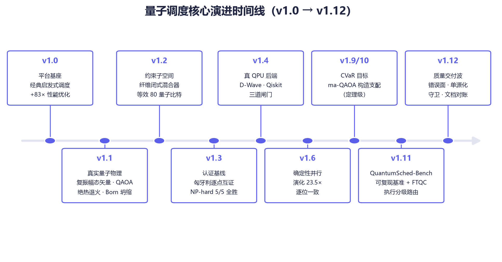
toIsing() 导出的 (h,J) 可直接提交真实量子退火机，届时同一问题无需改代码即可换执行位置。hybrid 启发式。npm test / npm run bench / npm run performance）。MIT © Quantum Agent Team